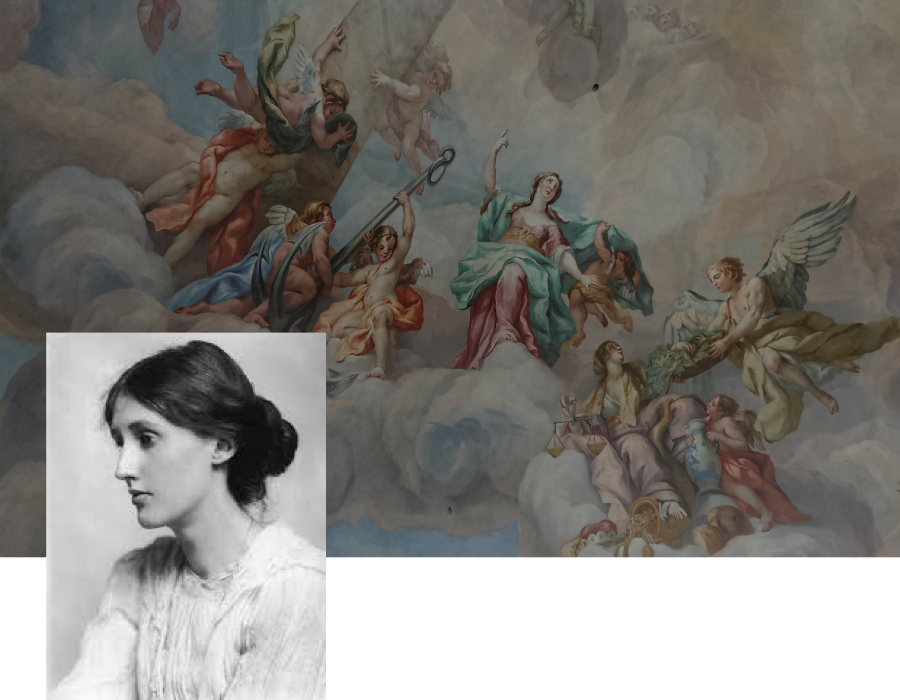
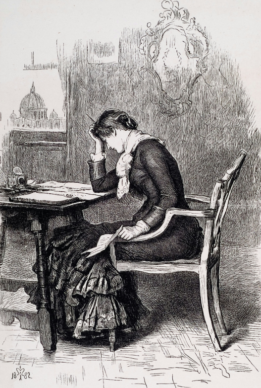
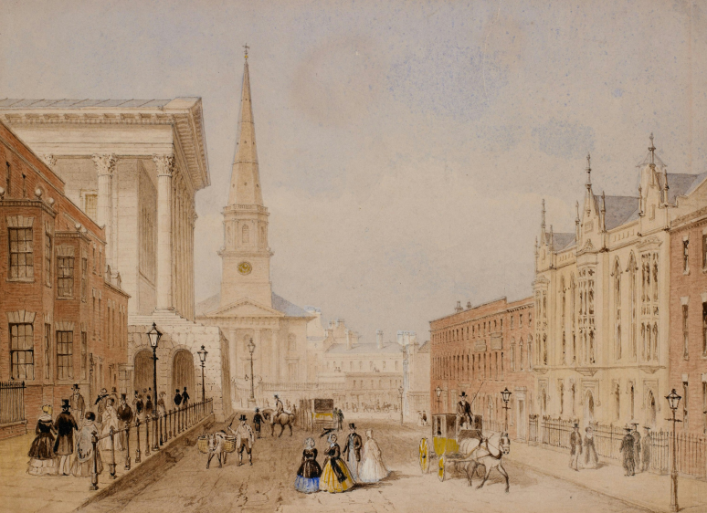

Вірджинія
Вульф
Британська письменниця,одна з найвідоміших модерністок XX століття,представниця фемінізму. Використовувала потік свідомості як літературний прийом.
Біографія

Моменти, що формують
Народилася 25 січня 1882 року в Лондоні в родині літ.критика Л.Стівена і Д.Дакуорт Була третьою дитиною в сімʼї.
ЇЇ батько став прототипом багатьох її персонажів. Коли дівчині виповнилося 13 років від пневмонії померла її мама та саме тоді зведені брати вчинили спробу зґвалтувати її.Вірджинія тяжко переживала всі ці події:почала закриватись від усіх, приховувати свої емоції та мала нервовий розлад. У спогадах вона писала, що образ матері переслідував її, поки вона не написала роман "На маяк".
Старша сестра Стелла теж незабаром померла.Батько дедалі ставав жорстокішим, і це особливо впливало на Вірджинію та її сестру Ванессу, які в дитинстві були надзвичайно близькими. Вони поклялися одна одній ніколи не вступати в шлюб і завжди жити разом. Однак у 1907 році Ванесса прийняла пропозицію Клайва Белла, що глибоко образило Вірджинію. Це сталося лише через кілька днів після смерті її улюбленого брата Тобі. Після цього Вірджинія залишилася жити наодинці з братом.
У 1909
У 1912
Вірджинія несподівано прийняла пропозицію шлюбу від Л.Стрейчі, який відкрито визнавав свою гомосексуальність. Однак, цей шлюб так і не відбувся. У той період Вірджинія почала роботу над своїм першим романом і водночас продовжувала справу свого батька.
Вірджинія Стівен вийшла заміж за Леонарда Вульфа. Разом вони заснували видавництво «Хогарт Прес», де Вірджинія друкувала й редагувала тексти. Спочатку видавництво не приносило прибутків, але згодом стало надійним джерелом доходу для їхньої родини. Їхній шлюб здавався ідеальним: побудований на взаємоповазі, взаємодопомозі та підтримці, хоча в ньому не було місця для палкого кохання чи пристрасті.
Вірджинія була надзвичайно вимогливою до себе, особливо до своїх творів. Вона переписувала романи десятки разів, доки не досягала ідеального результату, і припиняла роботу лише під час нападів хвороби. Однак її психічний стан поступово погіршувався. Вона страждала від депресії й неодноразово намагалася вчинити самогубство.
Відносини Вулф із жінками були одним із найбільш суперечливих аспектів її життя.
У грудні 1922 року Вірджинія познайомилася з письменницею Вітою Секвілл-Вест. Між жінками зав'язалися романтичні стосунки. Це кохання надихнуло написати Вулф роман “Орландо”. Ця оповідь про безсмертну істоту, яка живе декілька століть, почергово змінюючи свою стать із чоловічої на жіночу.
Починається Друга світова війна. Вірджинія і Леонард хвилювалися через можливу нацистську окупацію (Леонард був євреєм). Вони відкрито обговорювали можливість парного самогубства. Для цього тримали в гаражі великий запас бензину, щоб отруїтися вихлопними газами.
28 березня 1941 року
Вона залишила чоловіку передсмертну записку. Вірджинія написала:
«Мій любий, я впевнена, що знову божеволію. Я відчуваю, що ми не зможемо пережити це знову. І цього разу я не одужаю. Я починаю чути голоси. Я не можу зосередитись. Тому я прийняла єдине правильне рішення і роблю те, що здається мені найкращим. Не думаю, що двоє людей могли бути щасливішими, ніж були ми, доки не прийшла ця страшна хвороба. Я більше не в змозі боротися. Я знаю, що псую тобі життя, що без мене ти міг би працювати. І зможеш, я впевнена. Я просто хочу, щоб ти знав — за все щастя у моєму житті я зобов’язана тобі. Ти був безмірно терпимий зі мною і неймовірно добрим. Якщо хтось і міг би врятувати мене, це був би саме ти. Я не думаю, що в цьому світі хтось був би щасливішим, ніж були ми…».
Потім вона пішла на річку Уз біля свого будинку та наклала на себе руки.

“Власна кімната”
“Власна кімната”- це одне з найвідоміших есе Вірджинії Вулф, опубліковане в 1929 році та засновано на лекціях, які вона прочитала в жовтні 1928 року у двох студентських товариствах Кембриджського університету.Цей твір став визначальним у становленні письменниці як однієї з провідних фігур феміністичного руху. Есе закликає жінок кидати виклик стереотипам,фінансово й інтелектуально розвиватись та боротися за своє законне місце у світі літератури.
Одна з основних ідей — жінка має бути фінансовою незалежною і мати власний простір,де вона може думати, творити і висловлюватися без тиску з боку суспільства.
Вулф показує, як мало жінок були представлені в літературі,бо вони мали дуже обмежений доступ до освіти і відсутність можливості розповідати свої історії на рівних умовах із чоловіками. Навіть найталановитіші жінки часто залишалися в тіні та не мали такий ж успіх,ніж протилежна стать.
Важливим аспектом есе є аналіз того,як патріархат формував суспільну свідомість та сприйняття жінок та їхніх почуттів. Жінкам доводилося боротися за право бути почутими, часто виступаючи лише як відображення чоловічого его, пригнічуючи власне самовираження.
Вулф демонструє, як чоловічі погляди домінують у визначенні того, що вважається важливим: «чоловічі» теми — війна, політика, спорт — важливі, тоді як «жіночі» теми — почуття, побут, сім'я — вважаються другорядними,неважливими Вона зазначає, що книги, які розповідають про «важливі» події, отримують більше визнання, ніж ті, що фокусуються на внутрішньому світі жінок. В результаті письменниці або підлаштовувалися під ці очікування, або намагалися довести, що їхні твори не менш важливі за чоловічі.
Твір "Власна кімната" є актуальним і сьогодні, оскільки він порушує питання, які все ще є важливими для жінок. Есе Вулф стає потужним закликом до змін, визнанням того, що жінки мають глибоке значення та цінність, тому варто боротися за своє місце не у літературі, а й у повсякденному житті.

“ДО МАЯКА”
(“To the Lighthouse”)
"До маяка"— один із найвідоміших романів Вірджинії Вулф, написаний у 1927 році. Письменниця ставить під сумнів традиційні гендерні ролі у сім'ї та другорядність жінок у суспільстві. Хоч може здатися,що персонажі примітивні, це було сильним відхиленням від норми того періоду, коли твір був написаний. У той час жінки повинні були відповідати традиціям і залишатися підкореними чоловікам.
Вулф майстерно зображує двох жінок: місіс Рамзі та Лілі Бріско. Місіс Рамзі, традиційна "берегиня домашнього затишку",яка віддана родині та шлюбу, але відчуває внутрішні суперечності та прагнення до більшої свободи. Вона твердо вірить, що тільки вийшовши заміж, можна досягти щастя.
На противагу з місіс Рамзі, Лілі Бріско — незалежна жінка-феміністка. Вона відкидає гендерні очікування від суспільства і прагне знайти власне місце у творчості, але вважається, що мистецтво належить виключно чоловікам. Лілі стає прикладом жінки,яка бореться за самовираження та ідентичність, протистоячи патріархальному суспільству. ЇЇ труднощі Лілі показують, наскільки важким є шлях до незалежності, адже упереджене ставлення до жінок глибоко вкорінене в суспільстві.
Важливим аспектом есе є аналіз того,як патріархат формував суспільну свідомість та сприйняття жінок та їхніх почуттів. Жінкам доводилося боротися за право бути почутими, часто виступаючи лише як відображення чоловічого его, пригнічуючи власне самовираження.
Вулф також наголошує на відсутності вищої освіти, що обмежує їхній потенціал. Чоловічі персонажі, які мають освіту та наукові досягнення, демонструють, як соціальні структури підтримують патріархат, залишаючи жінок у другорядній ролі.
Таким чином, Місіс Рамзі та Лілі Бріско символізують дві крайності, які ілюструють, як соціальні структури можуть одночасно обмежувати жінок, але також надавати можливості для творчості і незалежності.